| Provincias | Informacion |
|---|---|
| Pagina Principal | Segovia |
| Avila |
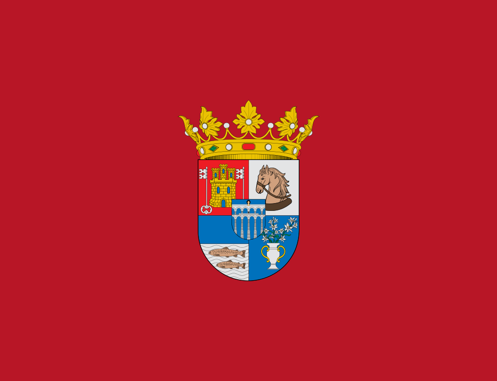
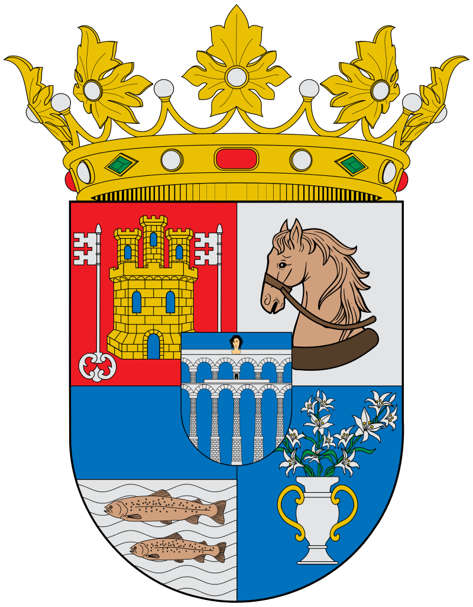
Video-presentacion Segovia Si el video no se reproduce correctamente pulse aqui
LOCALIZACION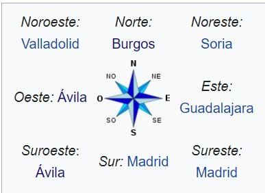 MapaSi el mapa superior no funciona haga click aqui Ir arribaLOCALIDADES PRINCIPALES
Ir arribaGEOGRAFIASegovia se halla situada en el interior de la península ibérica, inmediatamente al norte de la sierra de Guadarrama, en la base de las montañas y al sur de la Submeseta Norte. El centro de la ciudad se encuentra a una altitud de 1002 metros sobre el nivel del mar,1 mientras que la altitud del municipio varía entre los 880 metros en el último tramo en el municipio del río Eresma, en el norte de este, y los 1400 metros en el cerro de la Cachiporra, al sur del municipio. Esta localidad forma parte de la ruta principal del Camino de Santiago de Madrid. La provincia está surcada por diferentes cursos de agua que nacen en las alturas de la sierra de Guadarrama y que, con la excepción de algunos pocos arroyos que discurren en dirección suroeste pertenecientes a la cuenca hidrográfica del Tajo, discurren en dirección sureste-noreste por el llano de la Meseta Norte, todos ellos pertenecientes a la cuenca hidrográfica de Duero. ClimaEl clima de Segovia está determinado por su elevada altitud, su proximidad al sistema Central y su alejamiento de la costa; la temperatura anual tiene un promedio de 11,5 °C, con mínimas absolutas en diciembre de -17,0 °C (6 de enero de 1938) y máximas en julio de 39,7 °C (16 de julio de 1920);12 la precipitación anual es de 464 mm anuales, lo que hace de la provincia un rincón húmedo en el contexto de la Meseta. La vegetación predominante en las áreas montañosas, con pinos negrales, piñoneros y silvestres, robles, piornos y enebros, deja paso en las zonas más llanas a la encina y a las superficies cerealísticas, con paisajes de trigales, rastrojos y barbecheras. Si el widget superior no funciona haga click aqui Ir arribaHISTORIASe tiene constancia de asentamientos humanos desde la prehistoria, concretamente hay evidencia de la presencia de neandertales.El cerro donde hoy se alza el Alcázar, fue el lugar elegido por los celtas para construir un castro. Ocupacion romanaMás adelante fue ocupada por los romanos, quienes dejaron numerosas huellas que aún permanecen en nuestros días, como el Acueducto, construido hace más de 2.000 años para conducir el agua desde la sierra hasta la ciudad.Hoy se considera la obra de ingeniería civil romana mejor conservada de España. Tras ellos llegaron los visigodos, las muestras de su paso por la ciudad se conservan en el Museo de Segovia. Repoblacion cristanaLa ciudad fue abandonada durante la invasión islámica de la península.No fue hasta finales del siglo XI cuando es repoblada por los cristianos, gracias a eso se conserva un gran patrimonio románico. Los nuevos pobladores llegaron principalmente desde Francia. Alfonso VI encargó a su yerno Raimundo de Borgoña la tarea de repoblar la zona para mejorar las defensas al norte de la capital, que por aquel entonces era Toledo. Edad mediaLa Edad Media fue una época de gran esplendor, gracias sobre todo al auge de la industria pañera. Se colonizaron grandes territorios y se construyen numerosos conventos y monasterios de estilo gótico. El 13 de diciembre de 1474, en la Iglesia de San Miguel de Segovia se proclama reina de Castilla a Isabel la Católica. Edad modernaA principios del siglo XVI tuvo lugar la Guerra de las Comunidades, en la que los segovianos jugaron un papel destacado. Las tropas al mando del noble castellano Juan Bravo plantaron cara a los invasores flamencos, aunque finalmente Juan Bravo fue asesinado y la revuelta disuelta. En el siglo XVIII, coincidiendo con el comienzo del reinado de los borbones en España, se construyó el Palacio de la Granja de San Ildefonso, el Palacio Real de Riofrío y el Real Colegio de Artillería, la primera academia militar del país. Todo formaba parte de un plan para reflotar la economía de la ciudad, aunque no surtió el efecto deseado. Al igual que en otras ciudades castellanas, la Edad Moderna trajo el deterioro de la economía y la pérdida de población. Siglo XIXLa ciudad fue saqueada por el ejército francés durante la Guerra de Independencia. Poco tiempo más tarde, durante la Primera Guerra Carlista, fue atacada por las tropas del infante Carlos de Borbón, aunque sin éxito. ActualidadGracias a su cercanía con Madrid y la gran cantidad de patrimonio histórico que conserva, hoy Segovia es una de las ciudades más visitadas del centro de España. En 1985, la Unesco reconoció el casco antiguo como Patrimonio de la Humanidad. Ir arribaCULTURAEl patrimonio histórico de la provincia es muy rico y variado. En la capital se encuentran joyas romanas como el acueducto de Segovia, único en la provincia pues de la misma época sólo se conocen los mosaicos de algunas villas excavadas en Aguilafuente o Paradinas. 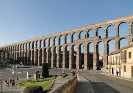El Museo de Segovia en la Casa del Sol de la capital segoviana, es una institución cultural del Estado español gestionada por la comunidad de Castilla y León, que custodia piezas históricas principalmente de la provincia de Segovia. A lo largo de su historia ha tenido varias denominaciones, Museo de Pinturas, Museo de Bellas Artes o Museo Provincial, así como diversas sedes desde la inicial en el palacio episcopal en 1842, pasando por la iglesia de san Facundo (1845) y la Casa del Hidalgo (1967), hasta instalarse en la Casa del Sol. Tiene como museo filial el Museo Zuloaga, situado en la iglesia de San Juan de los Caballeros. 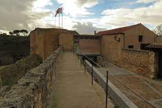El Museo de Arte Contemporáneo Esteban Vicente es un museo de la ciudad española de Segovia, que tiene su sede en el denominado Palacio de Enrique IV. Exhibe obras del pintor Esteban Vicente, natural de la provincia. En 2017, se incoó un expediente para declarar la colección del museo como un Bien de Interés Cultural. Esta colección está formada por un conjunto de obras del artista y por la colección permanente así como por el archivo documental y bibliográfico que alberga el museo. 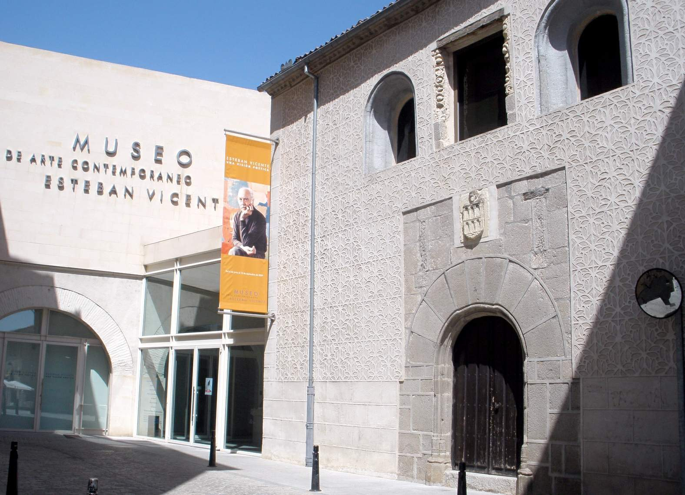La Real Casa de la Moneda es un edificio construido en el siglo xvi en Segovia como sede de la primera casa de moneda mecanizada en España. 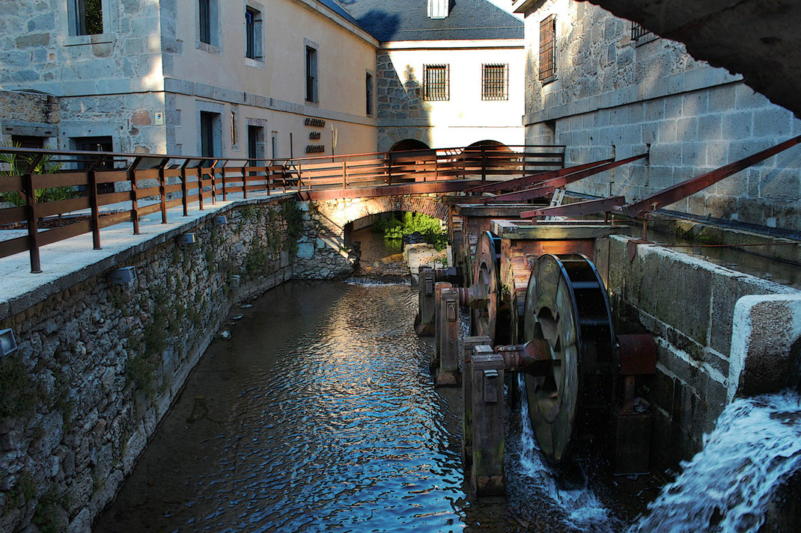La Casa-Museo de Machado en Segovia es una vivienda tradicional utilizada como pensión en el siglo xix y parte del xx, situada en el centro histórico de la ciudad de Segovia (España). Fue la casa en la que habitó el poeta Antonio Machado entre 1919 y 1932. Desde la segunda mitad del siglo XX ha sido administrada por la Real Academia de Historia y Arte de San Quirce. 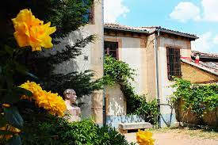El Museo Zuloaga es una institución cultural del Estado español gestionada por la Comunidad de Castilla y León, situado en la plaza de Colmenares, s/n. Está instalado en la antigua iglesia de San Juan de los Caballeros, abandonada a finales del siglo XIX, convertida en almacén de maderas y garaje, y que, adquirido por Daniel Zuloaga en 1905, fue reformado como taller y oficina. 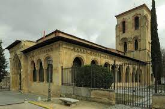Ir arribaNATURALEZALa provincia de Segovia ofrece a los amantes de la naturaleza unos grandes espacios naturales y áreas recreativas. A las extensas llanuras cerealísticas, típicas de los campos castellanos, se suman los grandes pinares, los paisajes serranos formados por pastos, encinas y pinos o las frescas riberas de los ríos, perfiladas por choperas o escarpados acantilados formados por la erosión del agua y el paso de los años. Parques Naturales como las Hoces del Duratón o las Hoces del Riaza, el Parque Nacional de Guadarrama o la Sierra de Ayllón, son garantías suficientes para conseguir un buen plan natural con éxito. Además, también lugares perfectos para la realización de senderismo, rutas cortas o largas, para todos los gustos. Parque natural de las Hoces del rio DuratonEl Parque Natural de las Hoces del río Duratón se declaró como tal en 1989 y está constituido por el tramo del Río Duratón que discurre entre Sepúlveda y la presa de Burgomillodo, pasando por los municipios de Carrascal del Río y Sebúlcor. Los 25 km de recorrido que compone las Hoces, han ido excavando la roca caliza, creando profundas paredes de hasta 70m. de altura, formando meandros.En las Hoces se encuentra una de las mayores colonias de Buitre Leonado de toda Europa, además del Águila Real, el Halcón Peregrino o el Alimoche. En 1991 fue declarada Zona de Especial Protección para las Aves (ZEPA). A lo largo del año se pueden llegar a observar más de 130 especies de aves. 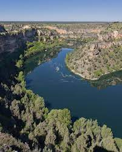Area recreativa Los AsientosEl Área Recreativa Los Asientos se sitúa en el Parque Nacional Sierra de Guadarrama, enclavada, como la Boca del Asno, en los Montes de Valsaín, declarados por la Unesco Reserva de la Biosfera en 2013. Se encuentra junto al río Eresma, ya muy cerca de la localidad de Valsaín y a la que podemos acceder caminando y atravesando el río cerca del precioso Puente de los Canales, sobre el río Eresma. Este servía para llevar agua al palacio de Valsaín. El canal, que fue restaurado recientemente, se mantiene gracias a veintisiete pilares. 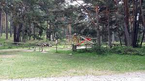Ambinete el Los AsientosChorro GrandeUbicada en la parte de la Sierra de Guadarrama del municipio de Palazuelos de Eresma, sus más de 60 metros de caída la convierten en la de mayor longitud de la Sierra de Guadarrama. Para llegar hasta el Chorro hay que hacerlos desde la misma localidad de La Granja y sólo se puede hacer caminando. Apta para todos los públicos, y con posibilidad de realizarla en cualquier época del año, el nivel de la ruta es variable ya que el viajero puede elegir tramos de mayor o menor dificultad. Las bajas temperaturas del invierno hacen que algunos tramos de la cascada queden congelados, convirtiéndose ésta en el escenario elegido por muchos amantes de la escalada en hielo, quienes se acercan a este bello lugar, enclavado en granito y escondido entre pinos silvestres, a disfrutar de este deporte invernal. 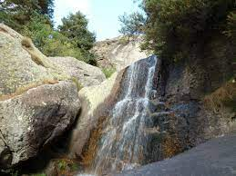Ir arribaTRADICIONESFiesta de la Virgen de la Fuencisla (25 de septiembre), patrona de Segovia. El día de la mayor celebración es el último domingo del mes. Dos jueves antes la Virgen sube desde su santuario en la alameda de la Fuencisla a la catedral para empezar la novena. Durante los nueve días siguientes se celebra la novena en la catedral, en la que se canta el himno de la Fuencisla, y el último domingo del mes la Virgen vuelve a su santuario. Puesto que la Virgen es capitán general de Artillería desde el 24 de septiembre de 1916, en sus viajes entre el santuario y la catedral va acompañada por los cadetes de la Academia de Artillería y por la banda de música. El día que vuelve al santuario va acompañada por los cadetes hasta la plaza del Azoguejo, donde se canta una salve. Hasta hace unos años había exhibiciones de jotas castellanas en la alameda de la Fuencisla a la llegada de la Virgen; últimamente las jotas se bailan en el propio Azoguejo. 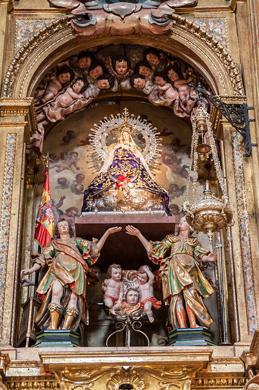Fiesta de San Lorenzo (en torno al 10 de agosto), es la fiesta de uno de los barrios más populares de la ciudad. 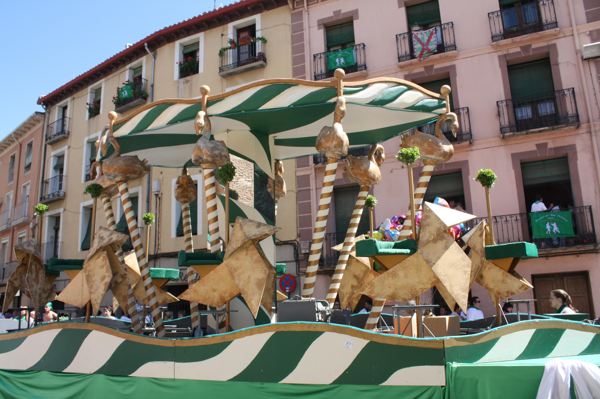Ferias y Fiestas de San Juan y San Pedro (entre los días 24 y 29 de junio), son las fiestas más señaladas de la ciudad y se vienen celebrando desde el siglo xv. Festividad de San Frutos (25 de octubre), patrón de Segovia. A media mañana se canta en la catedral el villancico de San Frutos, tras el cual suele haber distintas actividades en la plaza Mayor, como un pregón, un concierto de la Banda de la Unión Musical Segoviana, exposiciones de micología, etc. En los últimos años los pasteleros de Segovia han inventado un postre del santo. En la noche anterior a San Frutos se congregan los segovianos ante la imagen del santo que hay a la puerta de la catedral para verle pasar la hoja del libro que sostiene. 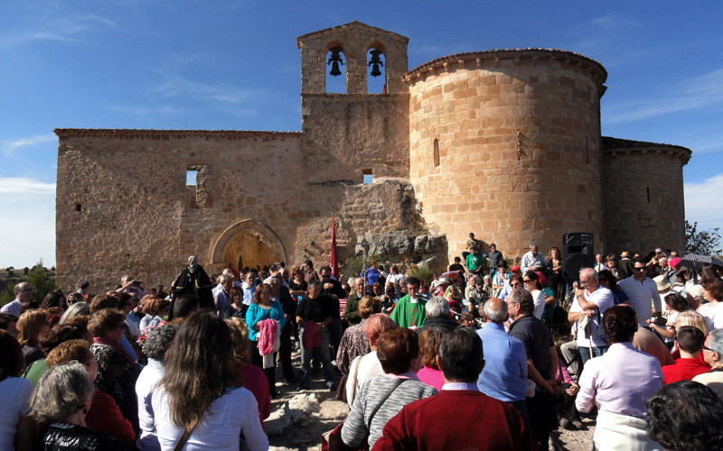Ir arribaOTROS ASPECTOS DE INTERESGastronomiaLa provincia de Segovia destaca principalmente por sus asados, tanto cordero como cochinillo de Segovia. Otros platos típicos son el chorizo de Cantimpalos, los judiones de La Granja, las sopas de ajo, y como postre el afamado ponche segoviano. El producto hortícola segoviano más conocido es el guisante. En cuanto a bebidas, en la provincia de Segovia, se encuentran municipios pertenecientes a dos Denominaciones de Origen: Denominación de Origen de Rueda, y Denominación de Origen Ribera del Duero; además, cuenta con el vino de calidad de Valtiendas. 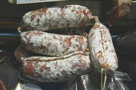 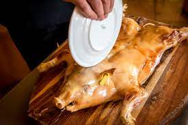FaunaHay una gran diversidad de fauna en la provincia de Segovia, hay aves como cuervos, pechiazules, acentor común, chova piquirroja… Anfibios como el sapo común, sapo corredor, rana patilarga, salamandra… Y mamíferos tales como el corzo, lirón careto, liebre, topillos, musaraña, zorros….. 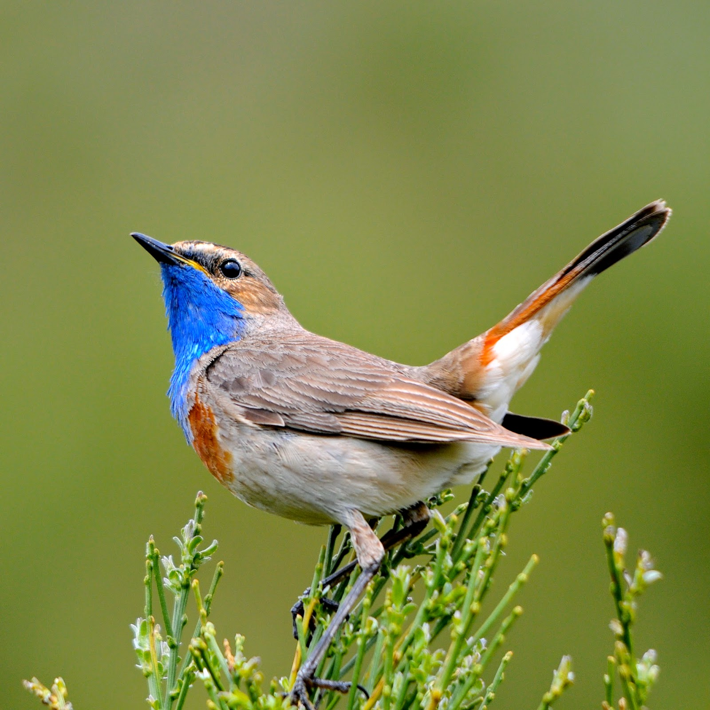 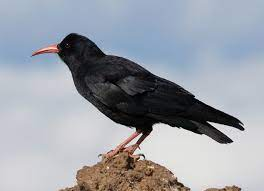FloraEl roble rebollo o melojo, que es la especie que mejor crecería en este lugar de forma natural, se entremezcla con pinos en la parte más baja del pinar y forma pequeños robledales en algunas zonas como la falda de Aguas Vertientes, la solana de El Estepar, y los entornos de la Ermita de Santo Domingo. La vegetación asociada a los robledales y encinares es más abundante y dispersa que en el caso de los pinares predominan diferentes especies espinosas (rosal silvestre, retama negra, escobón, espino negro, zarza, espino blanco), arraclanes, jara estepa, enebro rastrero, lavandas y tomillos… En el estrato más cercano al suelo se dan multitud de flores como narcisos, gencianas, orquídeas y peonías. En las zonas altas ocupadas por el matorral de altura encontramos principalmente piorno, brezo y enebro rastrero, también podremos ver otros matorrales más raros como la gayuba o el cambroño y varias especies herbáceas tanto anuales como vivaces, sin olvidar diversas flores como dedaleras. En los bosques de ribera influenciados por la mayor existencia de agua encontramos árboles caducifolios como fresnos, sauces y chopos, además hay matorrales (zarzas, majuelos…) y otras especies típicas de zonas inundadas como juncos. 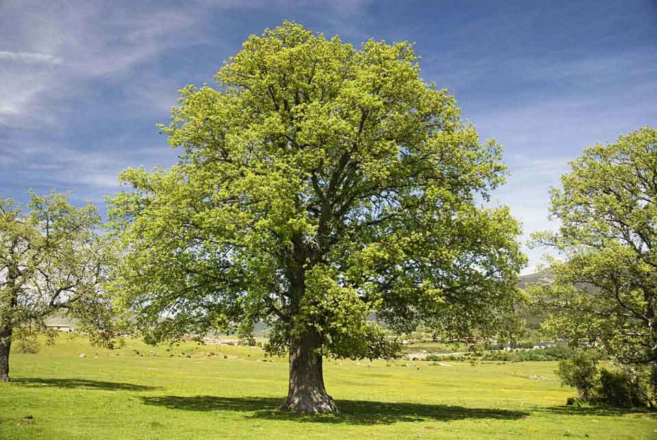 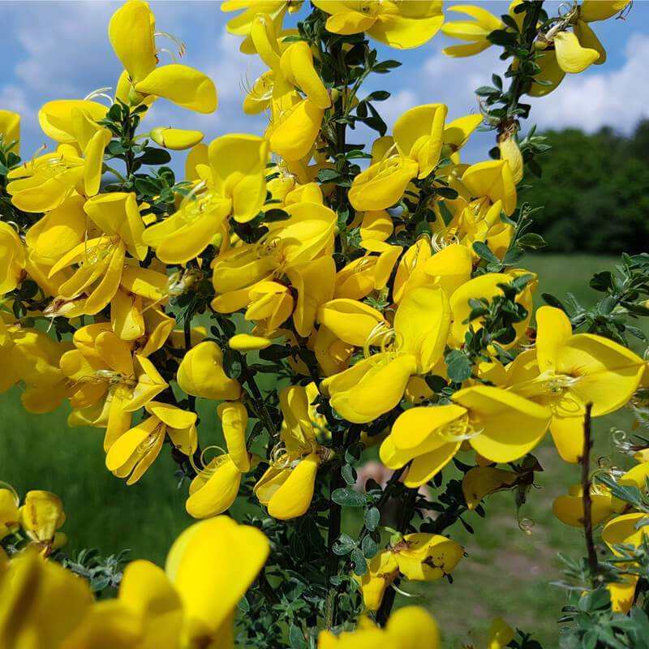Ir arriba |
| Burgos | |
| León | |
| Palencia | |
| Salamanca | |
| Segovia | |
| Soria | |
| Valladolid | |
| Zamora | |
| Pagina de contacto |